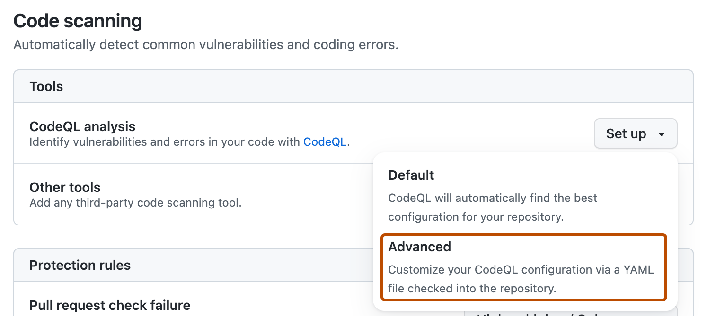
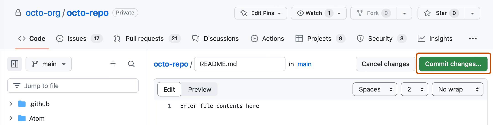
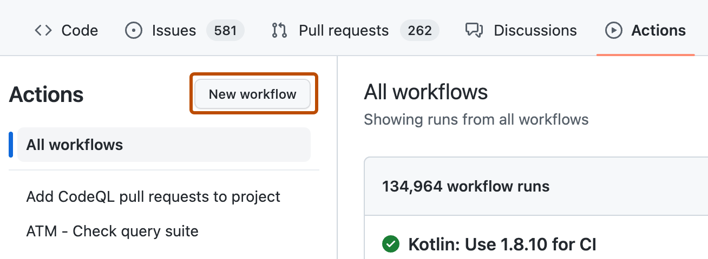
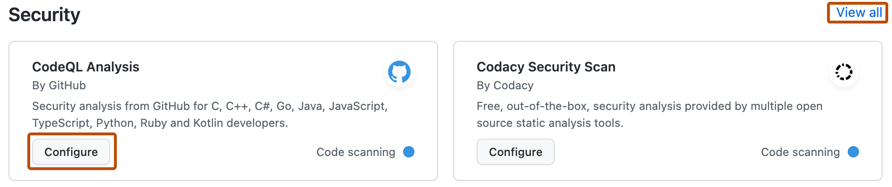
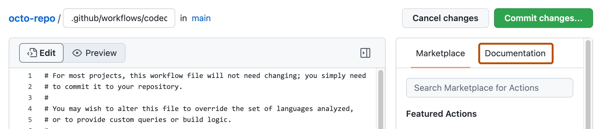

You can configure advanced setup for a repository to find security vulnerabilities in your code using a highly customizable code scanning configuration.
If you do not need a highly customizable code scanning configuration, consider using default setup for code scanning. For more information, see About setup types for code scanning.
Prerequisites
Your repository is eligible for advanced setup if it meets these requirements.
It uses CodeQL-supported languages or you plan to generate code scanning results with a third-party tool.
GitHub Actions is enabled.
It is publicly visible, or GitHub Code Security is enabled.
Configuring advanced setup for code scanning with CodeQL
You can customize your CodeQL analysis by creating and editing a workflow file. Selecting advanced setup generates a basic workflow file for you to customize using standard workflow syntax and specifying options for the CodeQL action. See Workflows and Workflow configuration options for code scanning.
Using actions to run code scanning will use minutes. For more information, see GitHub Actions billing.
Note
You can configure code scanning for any public repository where you have write access.
On GitHub, navigate to the main page of the repository.
Under your repository name, click Settings. If you cannot see the "Settings" tab, select the dropdown menu, then click Settings.
In the "Security" section of the sidebar, click Advanced Security.
Scroll down to "Code Security", in the "CodeQL analysis" row select Set up , then click Advanced.
Note
If you are switching from default setup to advanced setup, in the "CodeQL analysis" row, select , then click Switch to advanced. In the pop-up window that appears, click Disable CodeQL.

To customize how code scanning scans your code, edit the workflow.
Generally, you can commit the CodeQL analysis workflow without making any changes to it. However, many of the third-party workflows require additional configuration, so read the comments in the workflow before committing.
Click Commit changes... to display the commit changes form.

In the commit message field, type a commit message.
Choose whether you'd like to commit directly to the default branch, or create a new branch and start a pull request.
Click Commit new file to commit the workflow file to the default branch or click Propose new file to commit the file to a new branch.
If you created a new branch, click Create pull request and open a pull request to merge your change into the default branch.
In the suggested CodeQL analysis workflow, code scanning is configured to analyze your code each time you either push a change to the default branch or any protected branches, or raise a pull request against the default branch. As a result, code scanning will now commence.
Configuring code scanning using third-party actions
GitHub includes workflow templates for third-party actions, as well as the CodeQL action. Using a workflow template is much easier than writing a workflow unaided.
Using actions to run code scanning will use minutes. For more information, see GitHub Actions billing.
On GitHub, navigate to the main page of the repository.
Under your repository name, click Actions.
If the repository has already at least one workflow configured and running, click New workflow to display workflow templates. If there are currently no workflows configured for the repository, go to the next step.

In the "Choose a workflow" or "Get started with GitHub Actions" view, scroll down to the "Security" category and click Configure under the workflow you want to configure. You may need to click View all to find the security workflow you want to configure.

Follow any instructions in the workflow to customize it to your needs. For more general assistance about workflows, click Documentation on the right pane of the workflow page.

When you have finished defining your configuration, add the new workflow to your default branch.
You can find detailed information about your code scanning configuration, including timestamps for each scan and the percentage of files scanned, on the tool status page. For more information, see Use the tool status page for code scanning.